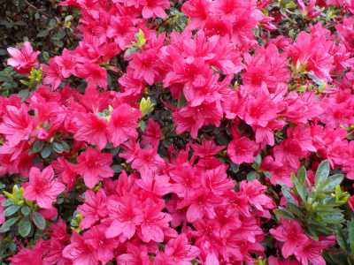
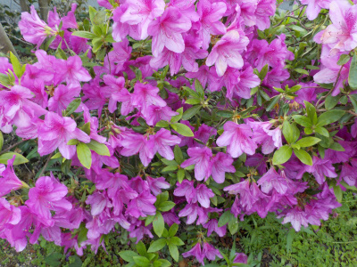
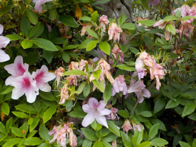
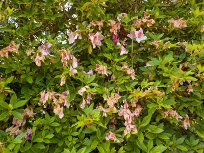
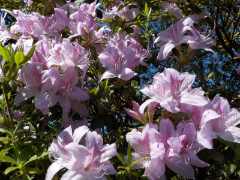
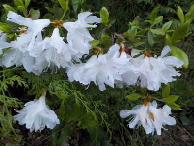
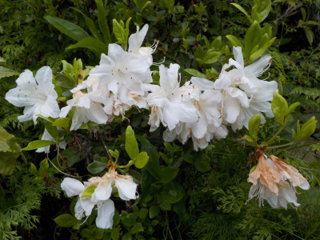
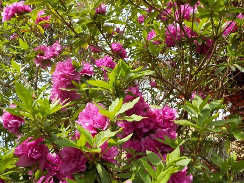

更新日 : 2020/04/18

このツツジは今が見頃です。
ゴールデンウィークにはどこかの観光地や公園でツツジを見ることが多いですが、今年は新型コロナで無理かな。
屋外だから空いた時間に散歩するくらいだったらいいのかな？
更新日 : 2021/04/17

この木は今が絶好調に咲いています。

早くから咲いていたものは、ドンドン終わっていってます。
毎年ゴールデンウィークくらいにツツジ祭りがありますが、今年はゴールデンウィークには花の多くが終わっていそうです。
コロナの影響でイベントはほぼ中止なので、今年は関係なさそうですけど。
更新日 : 2022/05/05

多くのツツジが只今こんな感じです。
こうゆうのが気になる人は花柄を取るんでしょうね。私は自然にまかせます。
更新日 : 2023/04/09

桜の花が終わってツツジの花の時期になりました。
今時ゴールデンウィークの頃にはツツジはもう終わっているので、ツツジが多い公園はそれまでに見に行ったほうがいいです。
更新日 : 2023/04/19

たぶん回りの木が大きくなって、日当たり悪くなってしまったツツジです。
花を枝で支えれないので、花が下を向いています。
白に透明感があって、弱々しくて繊細な感じがいいです。鉢植えで欲しいかな。
更新日 : 2023/04/23

白いツツジの花が終わりかけで茶色くなっています。
これを見ると挿し木しなくていいかなと思いました。
更新日 : 2024/04/27

普通のツツジがだいぶ終わって、八重のツツジの時期になりました。
今年のツツジは花が一斉に咲かなかったので、開花期間が長かったです。
ツツジはあちこちで植えられていますよね。でも公園ではあまり観賞しないかも。
【おいしいものを食べよう。】【たくさん寝よう。】
【ソロ活をしよう!】【季節感のあることをしよう。】【動画視聴はほどほどに。】【当サイトの全てのコンテンツは無断転載禁止です。】